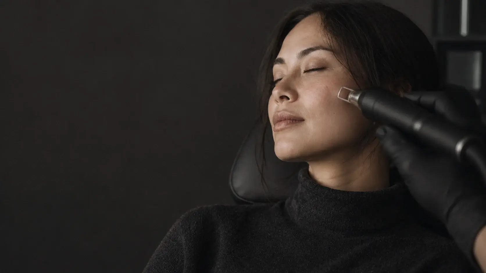
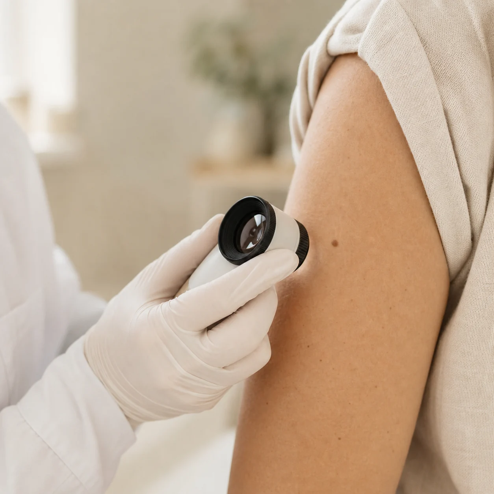
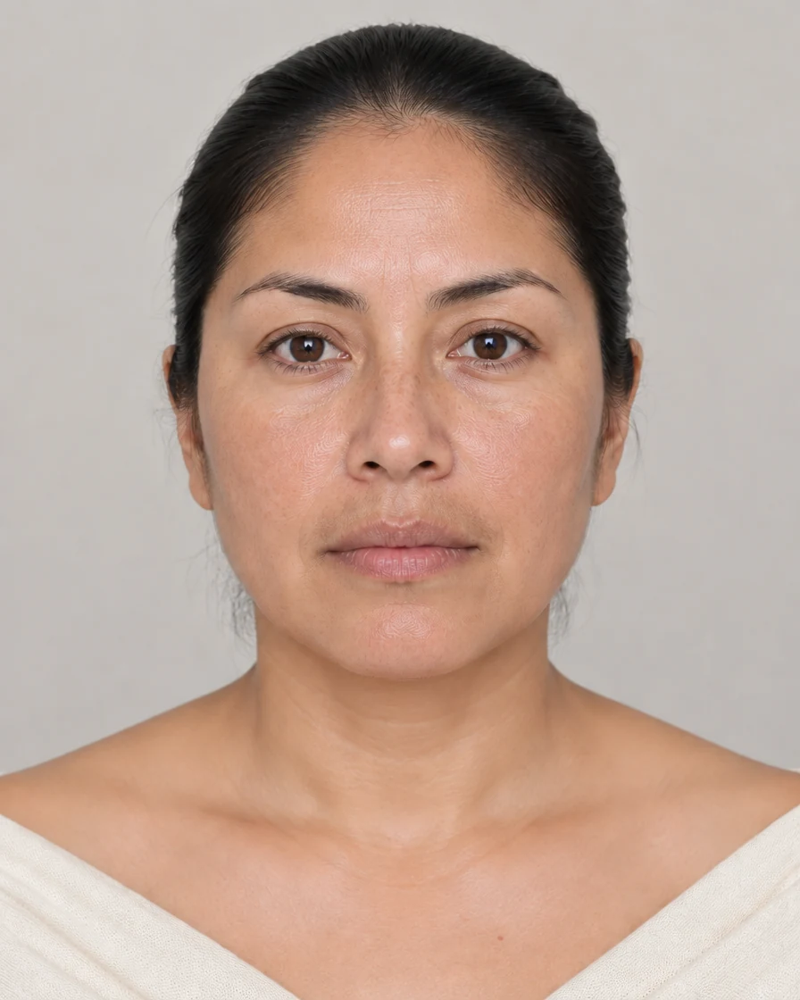
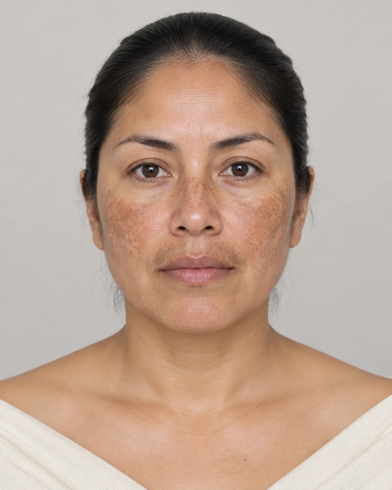
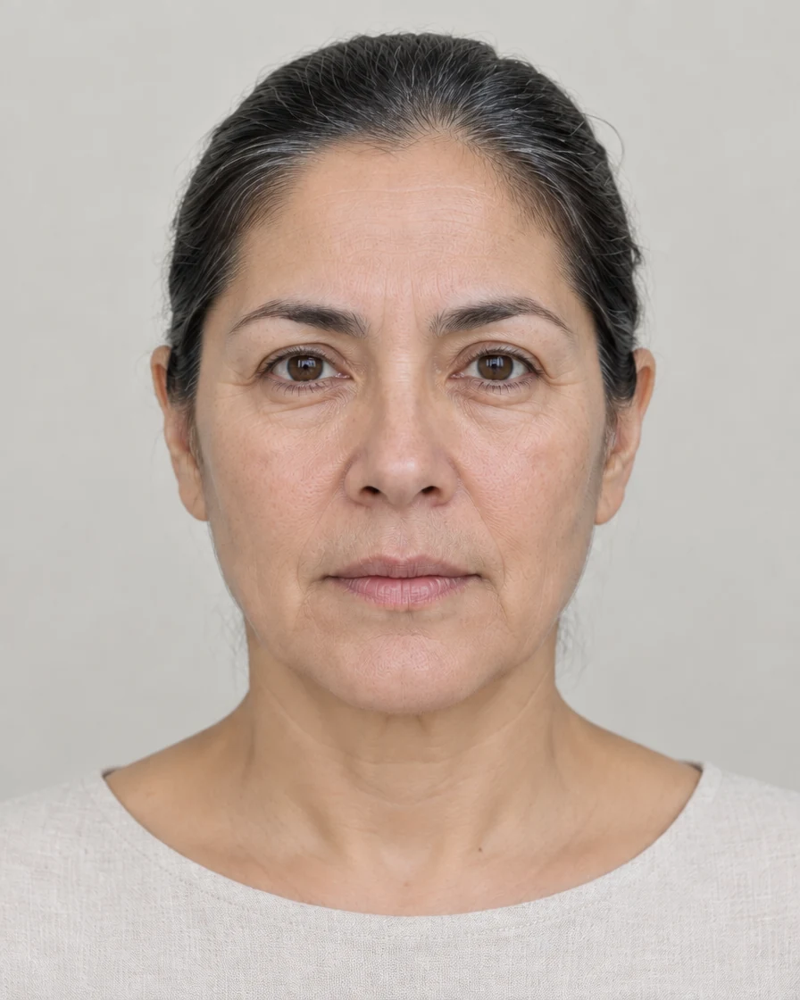
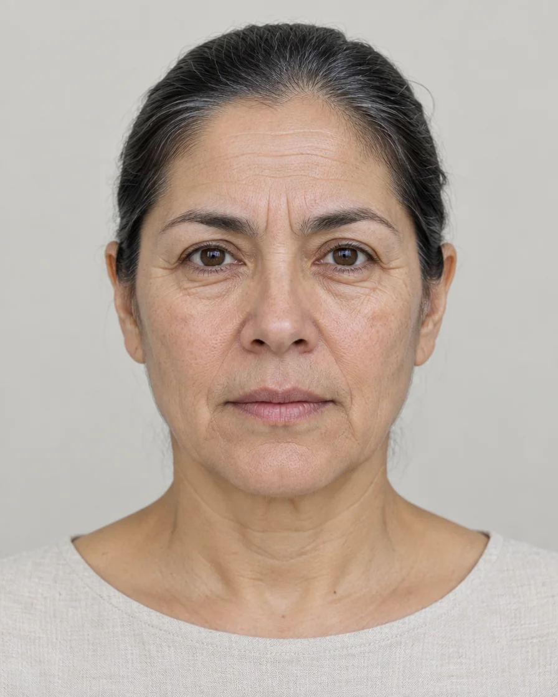
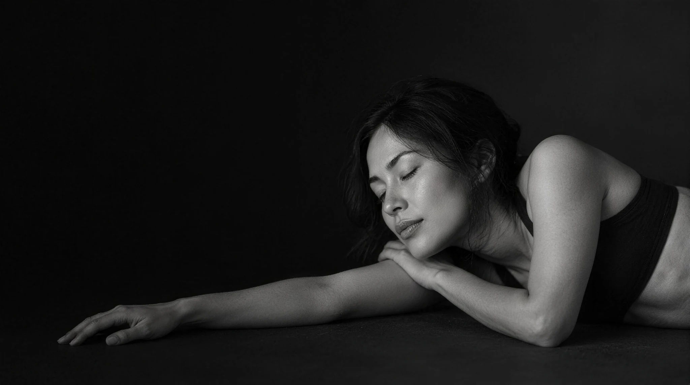

Dermatología clínica y estética — San Isidro, Lima
Piel sana y belleza natural con dermatología de especialista
Estás en manos de una especialista
Soy dermatóloga egresada de la Universidad Peruana Cayetano Heredia, con especialidad en dermatología estética y láser. Tras más de 12 años en clínicas de Lima, abrí mi consultorio en San Isidro con una idea simple: consultas donde nadie mira el reloj.
No creo en tratamientos de moda ni en resultados exagerados. Creo en evaluar bien, explicar con honestidad qué funciona para tu piel — y qué no — y acompañarte en el proceso.
Conversemos por WhatsApp →

Tratamientos que cumplen lo que prometen
Toda propuesta parte de una evaluación dermatológica completa.


Antes y después
Arrastra la línea para comparar. Casos ilustrativos creados para esta demo: no corresponden a pacientes reales. En un consultorio, cada resultado depende del tipo de piel, del diagnóstico y de la constancia del tratamiento.


Manchas solares en pómulos


Líneas de expresión y piel apagada
Cómo es la consulta
Agenda por WhatsApp
Escríbenos y coordinamos día y hora según tu disponibilidad. Te confirmamos en el día.
Evaluación completa
45 minutos de consulta: historia clínica, análisis de tu piel con dermatoscopio y tus objetivos.
Plan a tu medida
Recibes un plan claro con opciones, tiempos y costos transparentes. Tú decides sin presión.
Seguimiento real
Controles incluidos y línea directa con el consultorio para cualquier duda entre citas.

Resultados naturales
para una piel sana
Historias de pacientes
"Llegué con manchas de sol que arrastraba hace años. En tres sesiones de láser la diferencia es notoria. Me explicó desde el inicio cuántas sesiones iba a necesitar, sin venderme de más."
"Fui por un lunar que me preocupaba y terminé haciéndome el chequeo completo de piel. La doctora se toma su tiempo, cosa rara hoy en día. Pasé todo por mi seguro Pacífico sin problema."
"Me daba miedo quedar con cara rara. El resultado es tan natural que mis amigas solo me dicen que me veo descansada. Exactamente lo que pedí."
"Agendar fue lo más fácil del mundo: un WhatsApp un martes y el sábado ya estaba en consulta. Puntuales, y el plan que me armó se ajustó a mi presupuesto."
Preguntas frecuentes
Trabajamos con Rímac, Pacífico y Mapfre para consultas y procedimientos de dermatología clínica. Los tratamientos estéticos son de atención particular. Escríbenos con el nombre de tu plan y te confirmamos la cobertura antes de tu cita.
Aproximadamente 45 minutos. Incluye historia clínica, evaluación completa de tu piel con dermatoscopio y una propuesta de plan de tratamiento con costos claros.
Sí, de 9:00 a. m. a 1:00 p. m. Son los horarios más solicitados, así que te recomendamos agendar con al menos una semana de anticipación.
Solo por WhatsApp. Nos escribes, te proponemos horarios disponibles y confirmas. Todo el proceso toma menos de cinco minutos, sin formularios ni llamadas.
Sí. Nunca aplicamos un procedimiento estético sin antes evaluar tu piel. Si vienes por estética, la evaluación dermatológica está incluida en esa primera consulta.
Sí, todos los procedimientos médicos y estéticos los realiza personalmente la Dra. Nakamura. El personal de apoyo solo asiste en la preparación.
El consultorio

San Isidro, Lima — a pasos del Olivar
Sábados: 9:00 a. m. – 1:00 p. m.
Atención particular y por seguros
Cochera para pacientes
Prepara tu consulta
Sigues agendando por WhatsApp, como siempre. Esto solo arma el mensaje por ti para que llegues a la primera cita con lo que la doctora necesita saber.
Nada se envía ni se guarda en esta página. Al pulsar el botón se abre WhatsApp con el texto ya escrito: tú lo lees y decides si lo mandas.